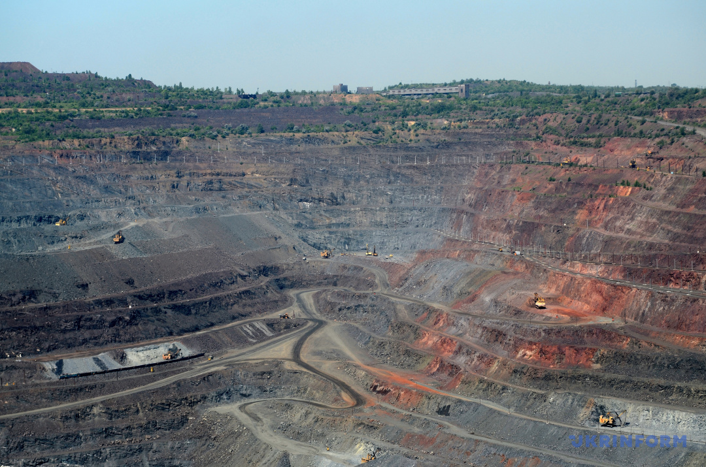
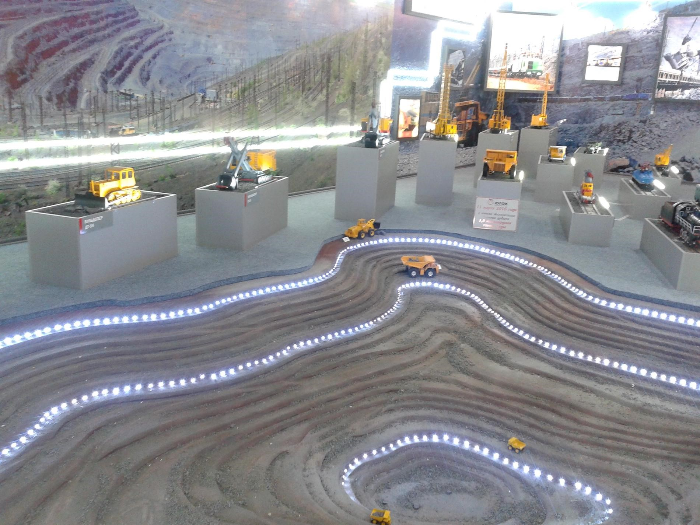

В Кривому Розі приваблюють гірничими техногенними ландшафтами, схожими на марсіанські пейзажі. На цій території відвали порід перетворилися на місцеві гори, затоплені кар'єри – на мальовничі озера, залізна руда під ногами – на своєрідне коштовне каміння.
Насправді ж довжина кар'єру становить 3 км, ширина – майже 2,7 км, а глибина за замкненим контуром – 360 метрів, із нагірною частиною – 425 м. Тут цілодобово працює велетенська техніка: понад 100-тонні БелАЗи, бурильні станки, бульдозери, яка пересувається горизонтами кар'єру. Загалом їх 28, із них зараз розробляються 19. Вантаж перевозить унікальна, бо власна, залізниця на електротязі, великі зрошувальні машини – гідромонітори – влаштовують місцевим схилам душ, щоб зменшити кількість пилу.

"Серце" Кривого Рогу вибухає раз на два тижні. Подивитися на масові вибухи, які проводяться для добування руди, можуть і туристи – або вживу, або онлайн. Тут запевняють, що родовища вистачить ще орієнтовно на 60 років. Тож охочі пересвідчитися в масштабності видовища на власні очі ще встигають це зробити.
У Музеї ПівдГЗК можна детально роздивитись макети техніки, якою користуються при розробці кар’єру, нагороди та фото кращих робітників, а на 3D проекції показують детальну схему добування руди, навіть вибухи відтворюють. А ще це місце, де можна подивитись зблизька на концентрат і агломерат – звучить так собі, але з уст профі – значно ефектніше. Скажу лише, що руда, яку видобувають у кар’єрі є бідною на залізо у порівнянні з тією, яку піднімають із глибини шахт, тому її потрібно збагачувати, тобто видаляти зайву порожню породу, що не має в собі рудоутворюючих елементів. Так от, агломерат – це те, що лишилось після такої чистики.
А дорогою до музею знаходиться алея з велетенськими глибами порід видобутих у кар’єрі.